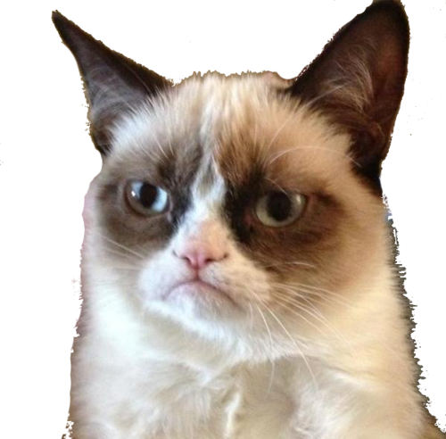

¿¿ TIC-TAC-DOGE ??
Score: {{ game.fbdata.leftScore }}

Score: {{ game.fbdata.rightScore }}
Current Player: {{ game.fbdata.currentPlayer }}
{{ game.fbdata.gameResult }}
PLAY AGAIN
Start Game
Clear Score